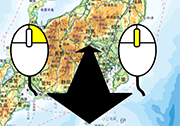
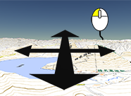
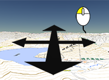
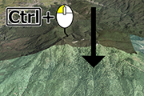
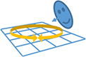
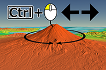
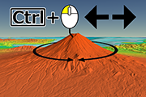
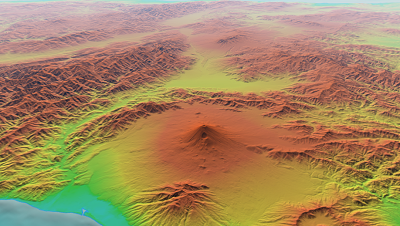
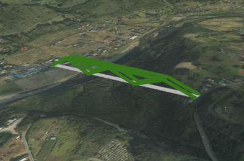

地理院地図Globe トップページ
「誰でも・簡単に・どこでも」地理院地図を地球儀のように、シームレスに3次元でみることができます。
3次元表示により、地形や地表の状況を直感的に理解しやすく、社会資本の管理や防災業務をはじめ、学校教育等、様々な場面で活用されることが期待されます。
- 閲覧するには、Internet Explorer 11、Microsoft Edge、Google Chrome、Firefox、Safariをご使用ください。
- ハードウェア等環境によっては動作しない場合があります。
- ネットワーク等環境により表示が遅延する場合は、最初は粗い画像が表示されますが、少しずつ精細な画像に切り替わっていきます。
最新情報
- 令和2年3月5日：地理院地図のUIに合わせるための改良（自分で作る色別標高図や地図表示の再現）を行いました。
- 平成31年3月26日：地理院地図のUIに合わせるための改良（外部タイル読込機能の追加や中抜きポリゴンの表示）を行いました。
- 平成30年3月 8日：地理院地図のUIに合わせるための改良（乗算合成機能や現在位置表示機能の追加）、より使いやすくするための改良（画像アイコンや属性の表示方法の改良）を行いました。
- 平成29年3月14日：地理院地図Globeを正式公開しました。
- 平成28年3月29日：地理院地図Globeを試験公開しました。
基本操作
ズーム |
マウスホイール／ドラッグ（右ボタン） |   |
パン |
ドラッグ（左ボタン） |    |
| チルト (対象を傾ける)  |
Ctrl+ドラッグ（左ボタン）↓↑ |   |
| 回転 (対象を回転)  |
Ctrl+ドラッグ（左ボタン）←→ |    |
地理院地図Globeの操作方法については、以下のマニュアルをご参照ください。
- 地理院地図Globe操作マニュアル [PDF 2,77MB]（2020年3月5日更新）
利用イメージ
 | 背景情報を空中写真にして表示 （地理院地図Globeで表示） |
|  | 背景情報を色別標高図にして表示 （地理院地図Globeで表示） |
 |
標準地図を背景に、平成26年７月の西之島空中写真撮影時の無人飛行機飛行経路データを重ねあわせ表示 （地理院地図Globeで表示） |
 |
空中写真を背景に平成26年８月豪雨災害時の土砂流出範囲図データを重ねあわせ表示 （地理院地図Globeで表示） |
 |
海外の地形を3D表示 （地理院地図Globeで表示） 表示例（ヒマラヤ周辺：高さ強調9倍） |
 |
日本の山岳標高1003山を3D表示 （地理院地図Globeで表示） |
|  | 【参考】空中写真 ＋ 橋梁イメージ 3次元データを読み込むことで、例えば橋梁イメージを表示させることもできます。 （操作マニュアル「4.1 KML・GeoJSONファイルの読み込み」を参照） |
利用規約
地理院タイルのご利用についてをご覧ください。
その他
その他技術情報やお問合せ先については地理院地図ヘルプページをご覧ください。
ページトップへ